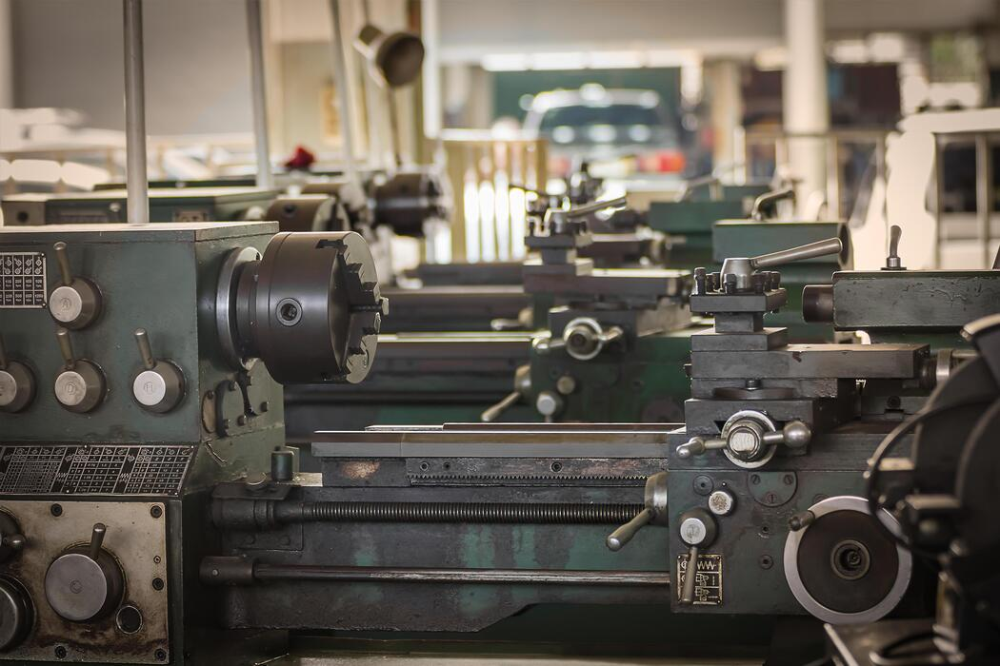

Recuperación dimensional, mecanizado cilíndrico y acabados técnicos de alta precisión.
En Tecno Compresión SAS ofrecemos servicios de torneado industrial orientados a la exactitud, concentricidad y estabilidad dimensional de componentes críticos.

Medidas precisas y controladas en cada operación.
Geometrías estables y balanceadas.
Componentes optimizados para operación continua.
Contáctanos y recibe asesoría técnica especializada.
Contáctanos